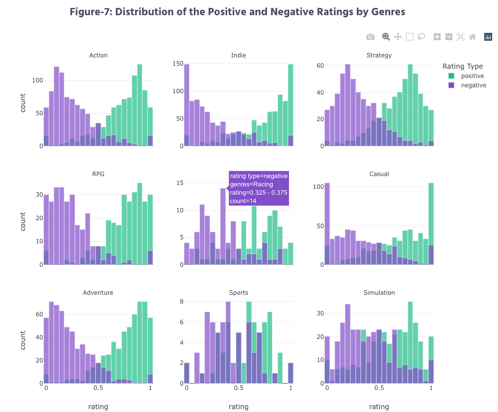
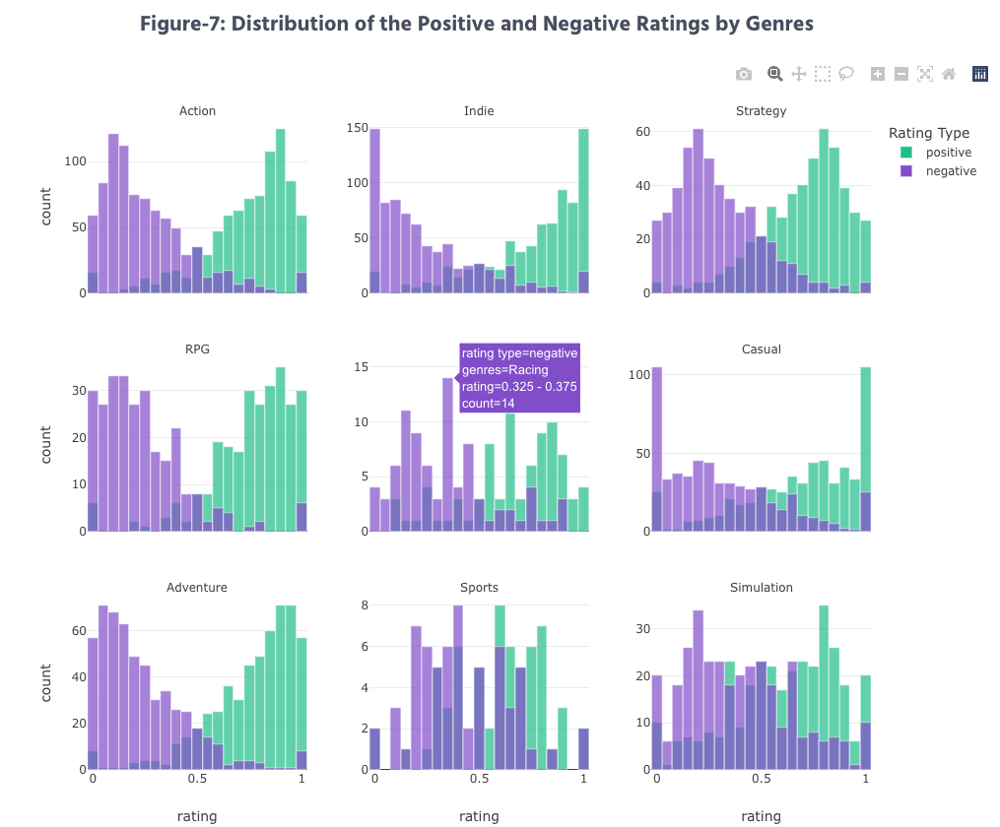

Figure-1 Bubble Plot
Innovative-view
Tooltip-view
Method: D3.js
Purpose: The popularity of a video game can significantly impact its success, making it a crucial aspect to analyze for us. A reliable indicator of popularity is the number of current players in a game, as it can reflect the game's appeal and user engagement. To gain insight into the popularity of different genres of video games and identify the most popular games, a bubble plot visualization can be used. This type of visualization provides an intuitive and comprehensive view of the player count for the top video games, with each bubble representing a game and its size indicating the number of players. Through the color distribution of the bubbles, users can quickly identify the most popular genres of games. Additionally, the visualization can provide specific details on the current top-performing games, making it a useful tool for industry professionals and gamers alike.
Data preparation: We choose the top 100 video games for the bubble plot visualization, including the rank of game, the number of players, game name, release date, description and images for the game. Choosing the top 100 video games provides a representative sample of the most popular and widely played games in the market. While there are tens of thousands of video games available, a small number of them tend to dominate in terms of player count and sales. In fact, it's often observed that the top 100 games account for a significant portion of the total player count and revenue generated by the gaming industry. For example, the top 100 games make up around 80% of the total player base or sales revenue, despite representing only a small percentage (less than 1%) of all games available. Analyzing and visualizing data for the top 100 video games can provide valuable insights into the most significant trends and patterns in the gaming industry. Moreover, the top 100 games are often more widely recognized and have a larger player base, making them a more relevant and useful dataset for analyzing the popularity of video games.
Encoding choices: Each bubble represents a game, and its size indicates the number of players, its color indicates the genres of the game, the tooltip shows detailed information, and games closer to the center of the circle have higher rankings. Through the color distribution of the bubbles, users can quickly identify the most popular genres of games.
Interactivity:
Tooltips: When hovering over the bubbles, there is a tooltip including information about the games (name, rank, player number, description, release date, and game poster).
Drag features: It is possible to drag a circle on the chart to reorganize, with the position of every other circle updating automatically.
Difficulty: For this bubble plot, to make data visualization more manageable and less overwhelming, enabling users to focus on the most critical aspects of the data, we have not tagged the exact number of the bubbles, however, users can find more information from the tooltips.
Reference: https://d3-graph-gallery.com/circularpacking.html
Screenshot:
Figure-2 Circular Bar Plot
Method: D3.js
Purpose: Sales across different genres and regions are also crucial to the gaming industry's success and growth. To gain insight into the popularity of each game genre and region, a circular bar plot visualization can be used. This visualization provides a comprehensive view of the sales distribution across different game genres. The circular layout of the bar plot enables users to compare the sales volume of each genre easily and identify the most popular genres. Moreover, the circular bar plot also differentiates the sales volume by region, adding another layer of insight into the gaming industry's sales trends. By using different colors to represent sales volumes in different regions, users can quickly identify the regions where certain game genres are more popular. This information is essential for players who want to gain insight into the gaming industry's global trends and tailor their strategies accordingly.
Data preparation: To analyze the distribution of game sales by genre and region, we utilized a comprehensive dataset of approximately 30,000 games. The dataset was processed by merging and grouping the data, enabling us to extract and differentiate the sales figures for each game genre and region. By aggregating the sales data for each genre and region, we were able to gain a more in-depth understanding of the gaming industry's sales trends, identifying the most popular game genres and regions where certain game genres are particularly successful.
Encoding choices: This visualization provides a comprehensive view of the sales distribution across different game genres. Each bar represents a specific genre, its length indicates the sales volume, and the bars' color indicates the sales regions.
Interactivity: This is a static visualization.
Difficulty: Since D3.js needs to import external javascript files in the process of embedding html, however, for circular bar plot, its implementation needs to use global variables to iteratively generate data, which will cause conflicts with other D3 visualizations existing on the web page. So for this visualization, we used an additional image link to it.
Reference: https://d3-graph-gallery.com/circular_barplot.html
Screenshot:
Figure-3 Violin Plot
Tooltip-view
Method: Plotly
Purpose: The pricing of video games plays a critical role as a barrier to entry for players with different purchasing power. The price of a video game is highly dependent on its genre, as each genre imposes different requirements on development, which directly affects pricing decisions. To gain a deeper understanding of the pricing distribution among different types of video games, a Violin plot visualization can be employed. This type of visualization allows for a clear display of data distribution, an intuitive view of data density, and the ability to simultaneously compare multiple genres. Each Violin in the plot represents a different genre, and its width indicates the density of game prices. Additionally, a dashed line represents the average price across all games. Through the distinct position and shape of each Violin, users can gain a comprehensive understanding of the pricing distribution across various genres.
Data preparation: Before Violin plot visualization, we conducted an exploratory data analysis (EDA) of game prices and found a large number of outliers, which adversely affected the overall visualization, making it impossible for users to clearly observe the price distribution. In order to better present the price distribution of each genre, we use the IQR (interquartile range) method to remove outliers in the price, so that the price distribution range is limited between 0-30 dollars. In addition, the processing results also confirm that the price of video games is mainly distributed in the range of 0-30 dollars. Through such data preparation, our violin plot visualization can better display the distribution of data and provide a better user experience.
Encoding choices:
Before choosing to use Violin plot, I explored using Heatmap and Histogram to display game price distribution, but found that Violin plot can more clearly show the price distribution between different game types and improve readability. This is because Violin plot can display distribution density and shape at the same time, making the characteristics of data distribution more obvious, and can compare between different genres, further improving the efficiency of data interpretation.
Each genre is represented by a separate Violin, and the width of each Violin reflects the density of game prices within that genre. A horizontal dashed line is also incorporated into the plot to denote the average price of all games.
Interactivity:
Tooltips: When hovering over the violin, the tooltip will display the name of the genre and price statistics, including average price, median, standard deviation, etc.
Difficulty: When using violin plot for visualization, we found that since the shape of the entire violin graph cannot be changed, there is a case of $0 in the price distribution, resulting in the tail of violin may be lower than $0. This can be confusing for users as it is difficult for users to tell if there is data below $0. Therefore, we need to pay attention to this situation and consider whether we need to include additional instructions or labels in the visualization to help users better understand the distribution of the data.
Reference: https://plotly.com/python/violin/
Screenshot: 
Figure-4 Radar Chart
Tooltip-view
Method: D3.js
Purpose: The purpose of the radar chart is to provide users with a stronger comparison in order to better understand the distribution of different game types in various price ranges. This is achieved by displaying multiple types of weights in different price ranges at the same time. As an independent representation of each genre, radar charts facilitate easy comparison between genres. Unlike violin charts, which focus primarily on exploring the distribution of prices within each category, radar charts place more emphasis on comparing the relative frequencies of different categories within the same price range.
Data preparation: When doing data preparation for radar charts, I divide the price range into five different intervals, including $0, $1-$10, $10-$20, $20-$50, and $50-$500. Since these price ranges are fixed, I did not exclude outliers in the data. When counting the data under each category, I converted them into percentages to better present them in the radar chart. This method helps to intuitively compare the proportions of different genres in different price ranges, enabling users to understand the differences between different genres more clearly.
Encoding choices:
To facilitate users' exploration of genre by selecting price ranges of interest according to their spending power, I divided game prices into five price range bands, including $0, $1-$10, $10-$20, $20-$50, and $50-$500. This way of dividing price ranges represents, to some extent, the general perception of free, acceptable and expensive games. Such a division can help users to select and compare various genre games more easily.
Each corner in the radar chart represents a genre, while each color represents a price range in order to present the percentage of multiple genres in different price ranges at the same time.
For the visual presentation of the radar chart, I borrowed from D3.js gallery's radar chart and improved it. Specifically, when the user moves the mouse over a price range color, the color changes from transparent to solid, thus reducing the interference of other price range colors to the color the user clicks on and improving the clarity and interactivity of the visualization.
Interactivity:
Tooltips: When the user clicks on the sharp corner of a genre on the radar chart corresponding to the color of a certain price range, the name and percentage of that genre will be displayed on the screen to help the user better understand the distribution of different genres in that price range.
Hovers: When the user hovers over a different price range of the radar chart, the color changes from transparent to solid to reduce the interference of other price range colors with user interaction.
Difficulty: In order to improve the readability of the radar chart, we need to solve the problem that the similar proportions in different price ranges may make it difficult for users to identify. To this end, we employ an interactive technique that changes the transparency of the price range on mouseover to mitigate this problem. This technique allows users to see more clearly the proportion of each price range without being disturbed by similar proportions.
Reference: https://d3-graph-gallery.com/spider.html
Screenshot:
Figure-5 Ridgeline Plot
Method: Altair
Purpose: Playtime is often a critical consideration for individuals seeking a new gaming experience. As the video game industry has expanded, the gaming community has diversified to include not only teenagers but also people with full-time jobs and daily responsibilities. Our objective is to analyze the median playtime for different game genres, assisting gamers in selecting a game that accommodates their schedules and preferences.
Data preparation: For this visualization, we utilized the Steam dataset, focusing on the median playtime variable. After conducting summary statistics on the median playtime, we performed several data cleaning steps. First, we removed all games with a 0-hour median playtime, as this value is not meaningful for analysis and should not be included in the distribution. Next, we applied a log transformation to the original variable to reduce the range of median playtime values and mitigate extreme skewness in the plot.
Encoding choices:
Position: We used a faceted layout with each row representing a genre, which facilitates side-by-side comparisons of playtime distributions across genres.
Color: Unique colors were allocated to each genre to improve differentiation and readability.
Size: The height of the density plot in each row represents the frequency of games with a particular log-transformed median playtime, while the width of the plot indicates the range of playtime values.
width of the plot indicates the range of playtime values. Shape: The ridgeline plot utilizes a series of overlapping density plots, making it easier to identify the distribution patterns and peaks of median playtime within each genre.
Interactivity: This is a static plot.
Difficulty: Initially, we opted for a point distribution plot to display the distribution of each genre's playtime. However, we discovered that the point plot was not sufficiently clear and straightforward for viewers to quickly discern the distribution patterns. Our goal was to showcase the playtime distribution in an easily interpretable manner, enabling gamers to identify the peak and skewness of each genre's playtime and make comparisons at a glance. Ultimately, we decided on a ridgeline plot, which offers a more intuitive representation. However, identifying this type of plot and implementing it using Altair proved to be time-consuming and presented a challenge.
Reference: https://altair-viz.github.io/altair-viz-v4/gallery/ridgeline_plot.html
Screenshot:
Figure-6 Parallel
Innovative-view
Linked-view
Tooltip-view
Method: D3.js+Plotly
Purpose: The purpose of this visualization is to explore the relationship between expert ratings and user ratings in the video game dataset, as well as the relationship between each categorical variable and game scores, to help users better understand the quality and characteristics of games. Ratings are crucial in deciding to buy a game as they provide insight into the quality of the game. Before buying a game, players often need to know the ratings and reviews of the game to decide whether it is worth buying. Unlike other factors such as sales, price, and playtime, which can be subjective, ratings are reviews from real users and gamers, so they are more informative. Through the correlation analysis of scatter plots and parallel category plots, users can more intuitively understand the score distribution of different games, and can compare and analyze the quality, type and other characteristics of games, so as to make more informed purchase decisions.
Data preparation: During the data preprocessing and EDA process, we found that the number of relevant features (platform, publisher, developer, classification, and rating) in the game dataset is huge. Considering that presenting all the data would lead to overly complex and confusing visualizations, we chose to keep the 8 or 5 most numerous features of each feature in order to reduce the amount of data and improve the readability of the visualization chart. Therefore, in the data preprocessing stage, we adopted the method of data screening and filtering to keep only important categorical variables. In this way, the generated parallel diagrams will show clear and clear relationships, providing a reliable basis for subsequent analysis and visualization.
Encoding choices:
Using a scatter plot with user score and critic score as the horizontal and vertical axes respectively, it is possible to clearly see the relationship between them, i.e. the differences or similarities in ratings between professional ratings and users. Scatter plots also make it easy to show outliers or outliers to help us better understand the data set. With scatter plots, we can visualize the distribution of data points, detect if there are some interesting patterns or trends in the data set, and then better analyze the data and make more accurate conclusions.
At the same time, the parallel category charts can show the relationship between multiple categorical variables and the cross-correlation between each categorical variable at the same time. By presenting the data in groups, it makes the data more readable and also highlights different data characteristics through color mapping, etc. Linking parallel category charts with scatter plots can help users understand the relationship between different categorical variables and ratings more intuitively and thus analyze game data more accurately.
Interactivity:
User input 1/2: Users can use this button to select different colors to mark different game points. When the user circles a part of the range of points and then circles another part of the range of points, the scatter plot will show two different colors of points, and the two colors in the parallel plot represent the trend of the relevant features of the game in these two regions. Users can also click on the categorical variables in the parallel categorical graph to make the point areas in the scatter plot appear in two different colors, which is used to explore the distribution of the categorical variables in the score for the game features of interest. This interaction helps the user to quickly discover patterns and characteristics of the data.
Eraser: When the user wants to eliminate the color of a previously circled point area, the default state can be restored by clicking on the eraser button. Users can restore the default state by circling the scatter plot area or clicking on the parallel sorting chart, an interaction that makes it easier for users to explore the data.
Difficulty: When visualizing the parallel classification graph, I encountered two difficulties. The first was that when there are too many feature classification variables in the dataset, the visualization graph becomes very complex and difficult to understand, so I chose to ensure readability by filtering the platforms and developers of the game and keeping only the top 8 data. The second issue was that when using the d3.js example visualization for interpretation, I found that the interpretation of this graphic was different from our topic and content, so I made several attempts and finally innovatively designed the visualization graphic to fit our project.
Reference: https://d3-graph-gallery.com/parallel.html
Screenshot:
Figure-7 Histogram
Tooltip-view
Method: Plotly Express
Purpose: Scores and ratings play a pivotal role in gamers' decision-making process when considering a new game purchase. Unlike factors such as price, popularity, and playtime, ratings offer genuine feedback from gamers who have played or purchased the game. Our goal is to display the proportion of positive and negative reviews for each game in each genre, aiding players in finding highly-regarded games. By utilizing a histogram, we anticipate revealing distinct distributions for various genres.
Data preparation: To create a facet-grid histogram displaying the proportion of ratings for each game while also grouping them by the rating type (positive/negative), we performed several data cleaning steps. First, we generated two new columns named "positive_rate" and "negative_rate" to indicate the proportion of each rating type, calculated by dividing the number of positive/negative ratings by the total number of ratings. Next, we formed two subsets of the dataframe: one containing genres and positive_rate, and the other containing genres and negative_rate. This allowed us to add labels to each subset individually with "positive" and "negative," which later helped us utilize the hue argument to distinguish both distributions on the same facet. Finally, after manually adding the label "type of rating," we concatenated the two subsets, concluding the data preparation phase.
Encoding choices:
Position: We used a facet-grid layout to display separate histograms for each genre, allowing for easy comparison between genres.
Color: We assigned distinct colors to positive and negative ratings to make it easy for viewers to differentiate between them.We used light green for positive ratings and purple for negative ratings.
Size: The width of the bars in the histogram represents the rating proportions, while the height represents the frequency of games with a particular rating proportion. The height of the bars in the histogram represents the total count for each specific range of rating proportions.
Shape: We used rectangular bars to create the histograms, which is a common and easily recognizable representation for this type of visualization.
Interactivity: We incorporated tooltips for each bin in the histogram to enhance user engagement and understanding. When users hover over the bins, they are presented with relevant information, including rating type (positive or negative), genre, proportion range, and the count of games within that range. This interactive feature allows for a more intuitive exploration of the data and helps users quickly gather insights.
Difficulty: Initially, we aimed to incorporate a smooth trend line over each facet to provide an overview of the distribution. However, we encountered a challenge due to the limitations of Plotly Express, the visualization library we used. Unlike D3 and JavaScript, which allow for greater customization flexibility when adding multiple encodings, Plotly Express does not offer the option to include an additional encoding shape on each facet element.
Reference: https://plotly.com/python/facet-plots/
Screenshot:  

Contacts
Contact Us.